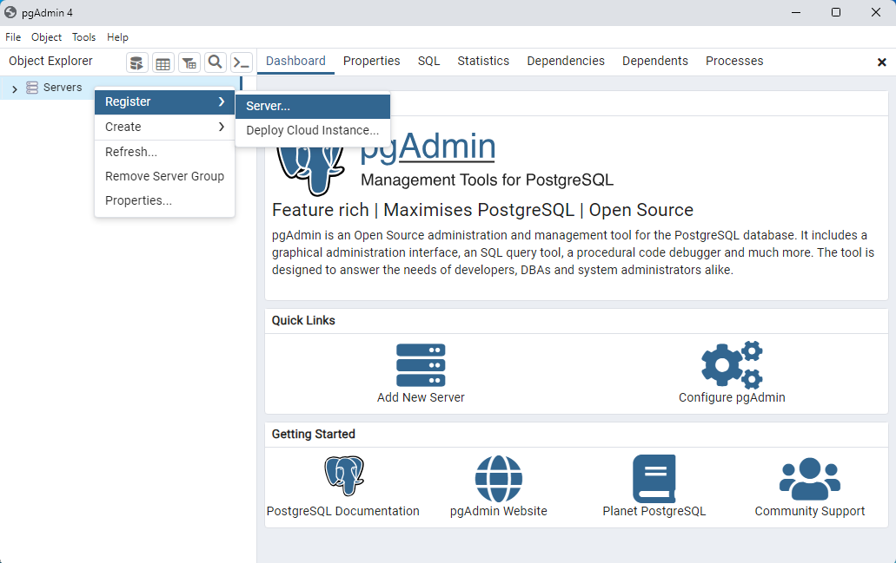

3 Instalación en Windows
Lo he probado en Windows 10 y 11. En versiones anteriores no funciona Power BI.
3.1 PostgreSQL y PgAdmin 4
PostgreSQL disponible en postgresql.org/download/.
He instalado la versión 16.3 de PostgreSQL.
Las opciones por defecto son adecuadas.
pgAdmin 4 disponible en pgadmin.org/download/.
Para acceder debemos recordar la contraseña que indiquemos para PostgreSQL.
Comprobamos la instalación abriendo pgAdmin 4 y conectándonos al servidor.

Figura 3.1: Definir conexión al servirdor PostgreSQL.
En la ventana que se abre debemos rellenar datos en dos pestañas:
- General > Name: mombre que queramos darle al servidor.
- Connection > Host name / address: indicamos el valor
localhost. - Connection > Password: la contraseña que hemos indicado en la instalación para el SGBD.
3.3 Pentaho Data Integration (PDI)
Instrucciones de instalación: https://www.hitachivantara.com/en-us/pdf/implementation-guide/three-steps-to-install-pentaho-data-integration-ce.pdf
He obtenido Java 11 de https://adoptium.net/es/temurin/archive/?version=11